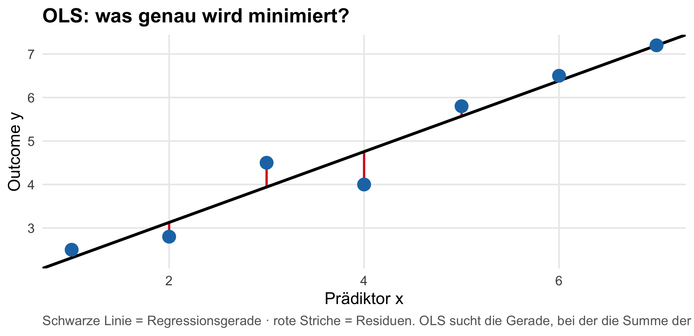
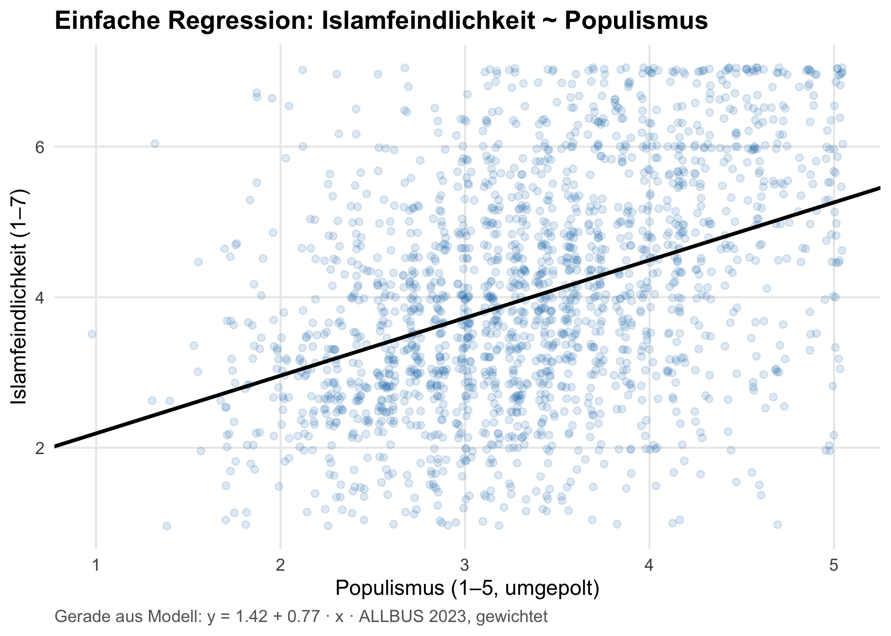
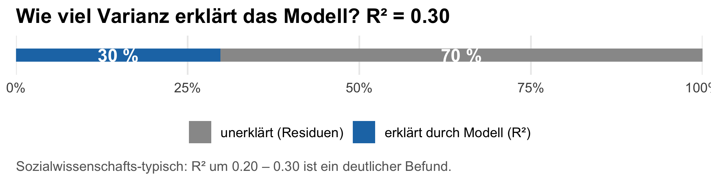
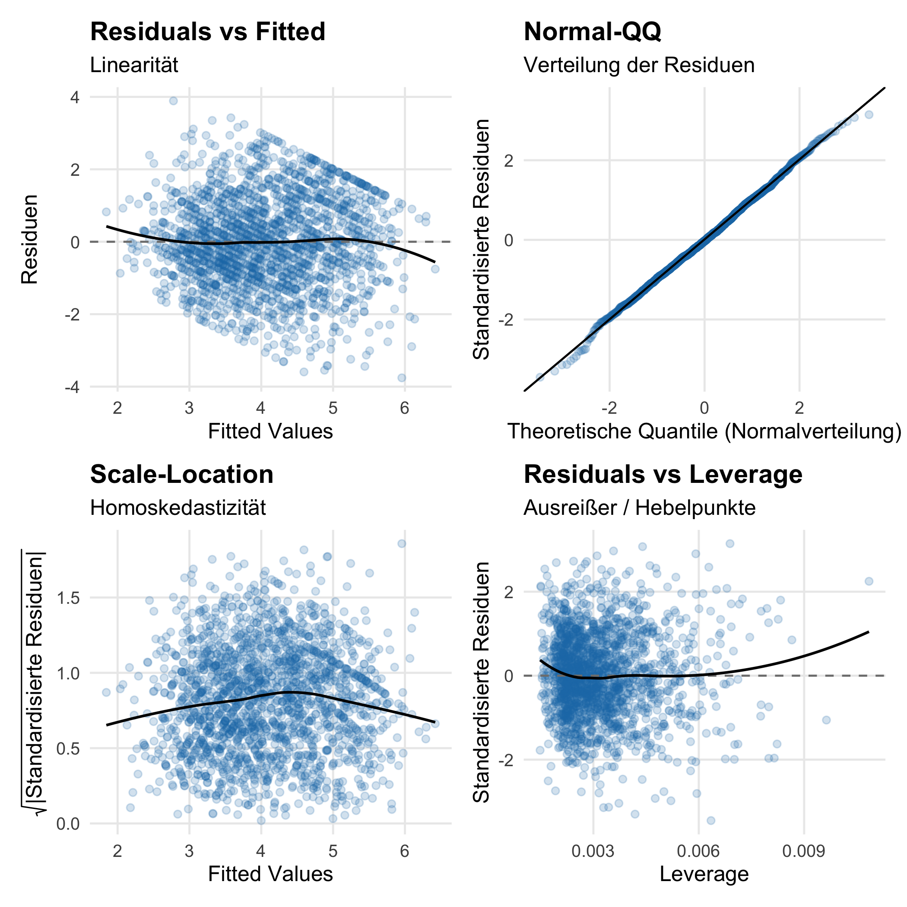
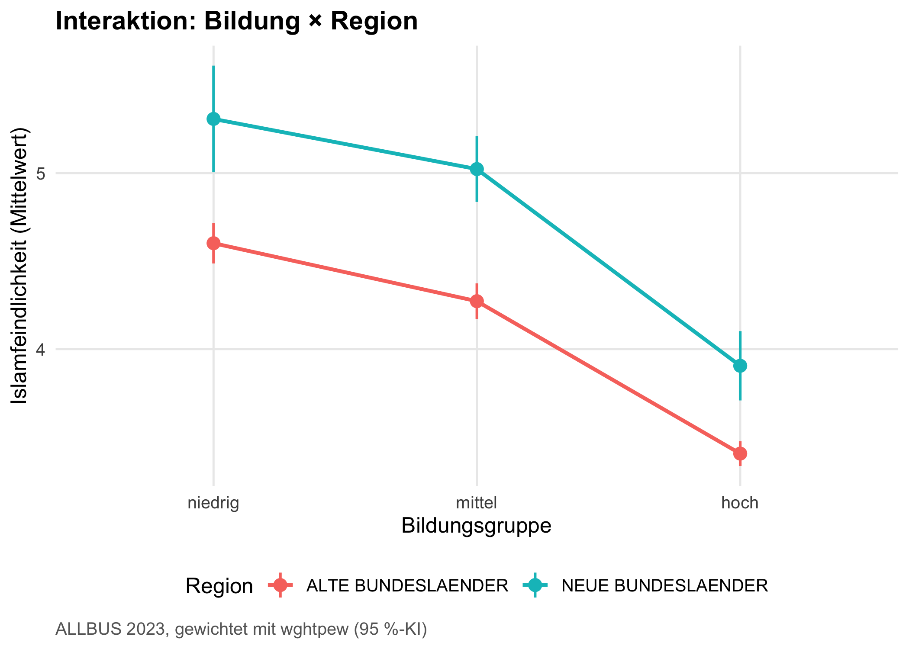
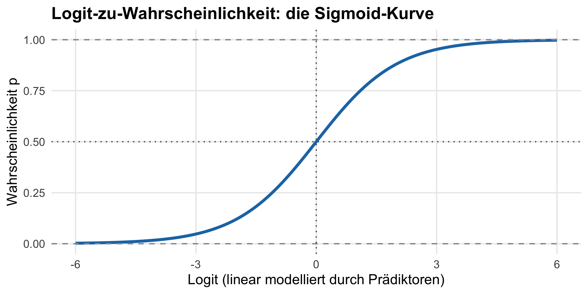
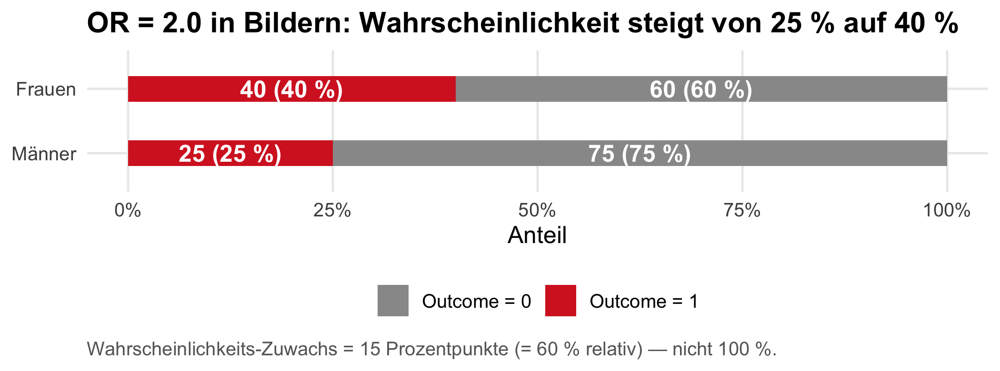
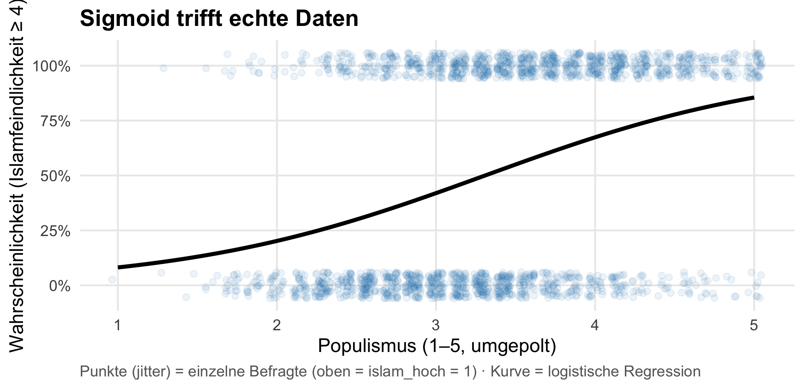
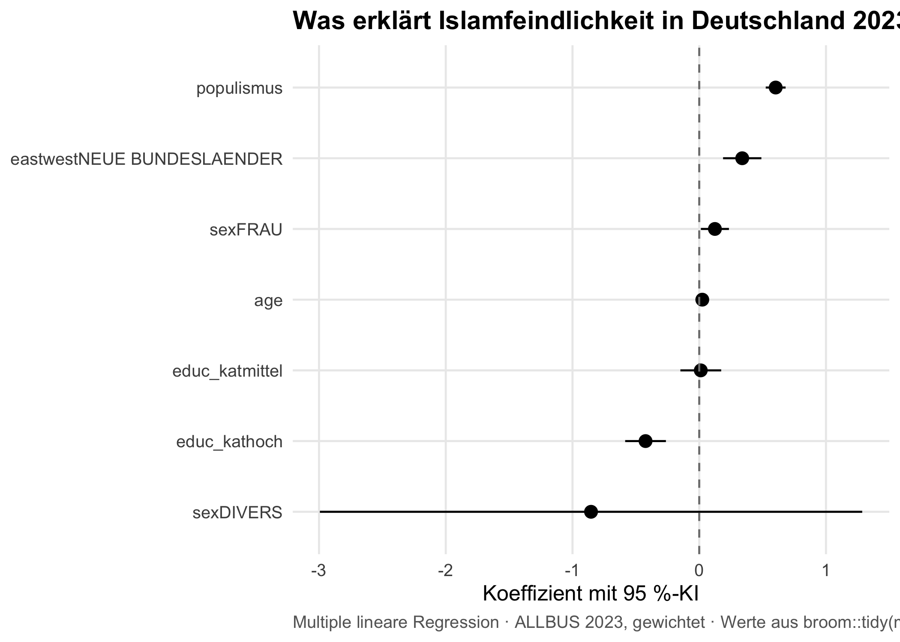
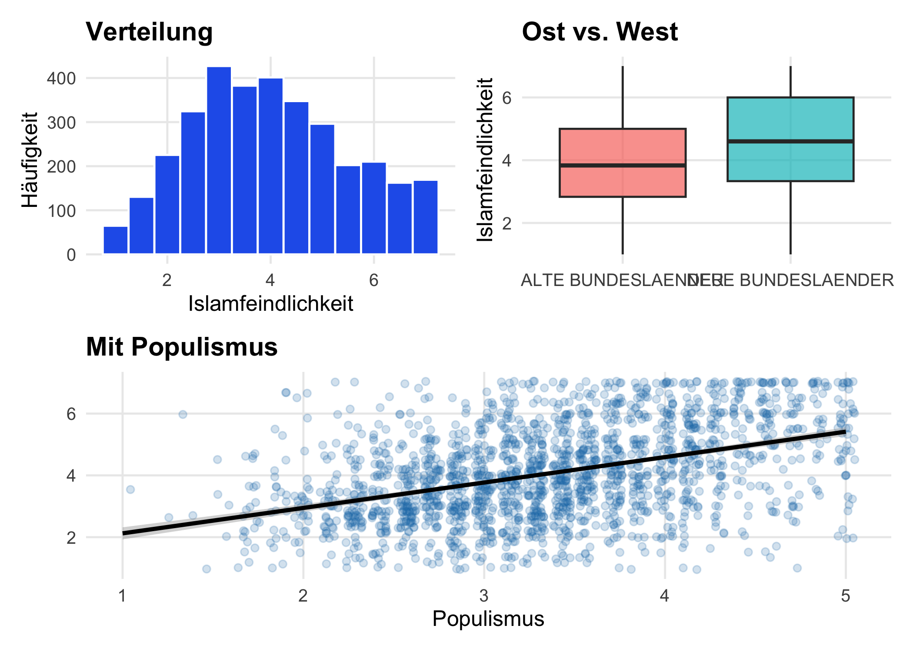

Welche Merkmale erklären Islamfeindlichkeit am besten — Bildung, Region, Alter, Populismus?
In Kapitel 7 hast du Variablen einzeln beschrieben und paarweise verglichen. In Kapitel 8 hast du die Skalen empirisch validiert. Jetzt verdichten wir den ganzen Methoden-Strang zu einem erklärenden Modell: mehrere Prädiktoren gleichzeitig, mit Kontrolle gegenseitiger Einflüsse.
Hinweis
Forschungsjournal: Wo stehst du in deiner Mini-Studie? Letzte Etappe. Mit diesem Kapitel schließt sich der Kreis: vom Rohitem über die Skala über die bivariaten Befunde zum multivariaten Modell — und am Ende zur publikationsfähigen Grafik. Wenn du die letzten Übungen durchziehst, hast du ein vollständiges, reproduzierbares Forschungsergebnis zur Islamfeindlichkeit in Deutschland 2023. Genau das, was bei einer Tagungsdiskussion oder einer Hausarbeit gefragt wäre.
9.1 Worum es geht
Die wahre Stärke der quantitativen Sozialforschung kommt erst zum Vorschein, wenn du mehr als zwei Variablen gleichzeitig betrachtest. In Kapitel 7 hast du gezeigt: Islamfeindlichkeit korreliert positiv mit Populismus, negativ mit Bildung, ist im Osten höher als im Westen. Aber das wirft sofort die nächste Frage auf: Sind das alles unabhängige Effekte? Oder hängen sie zusammen?
Vielleicht ist der Ost-West-Unterschied gar nicht „echt” — vielleicht liegt er nur daran, dass im Osten der Bildungsdurchschnitt etwas niedriger ist, und der eigentliche Treiber ist Bildung. Vielleicht wirkt Populismus ganz anders bei niedrig Gebildeten als bei hoch Gebildeten. Solche multikausalen Fragen lassen sich mit bivariaten Tests nicht beantworten. Du brauchst dafür ein Modell, das mehrere Prädiktoren gleichzeitig berücksichtigt — und dabei zeigt, was bei jeder einzelnen Variable übrig bleibt, wenn die anderen kontrolliert werden.
Das ist der Kern multivariater Verfahren: Sie isolieren den Effekt einer Variable, indem sie alle anderen gleichzeitig „herausrechnen”. Wenn am Ende der Effekt von Region kleiner wird, sobald Bildung im Modell ist, weißt du: ein Teil des scheinbaren Ost-West-Unterschieds war eigentlich ein Bildungseffekt. Wenn er gleich bleibt, weißt du: Region ist ein eigenständiger Prädiktor.
Dieses Kapitel führt dich durch die vier wichtigsten Werkzeuge dieser Klasse:
Mehrfaktorielle ANOVA — wenn zwei kategoriale Faktoren gleichzeitig wirken, eventuell sogar mit einer Interaktion (also der Frage: „Wirkt der Effekt von A in unterschiedlichen Subgruppen von B unterschiedlich stark?“).
ANCOVA — eine ANOVA mit einer kontinuierlichen Kovariate, die du als Störfaktor herausrechnen willst.
Multiple lineare Regression — der Allrounder, wenn deine abhängige Variable intervallskaliert ist (wie unsere Islamfeindlichkeits-Skala). Mit ihr kannst du beliebig viele Prädiktoren modellieren und ihre relative Wirkungsstärke vergleichen.
Logistische Regression — wenn deine abhängige Variable nur zwei Werte hat (ja/nein, hoch/niedrig). Sie ist die Standardmethode, um die Wahrscheinlichkeit eines binären Outcomes zu modellieren.
Am Ende kommunizieren wir die Befunde grafisch: Coefficient-Plots machen Modellergebnisse auf einen Blick lesbar, Patchwork kombiniert mehrere Befund-Plots zu einer publikationsfähigen Komposition, ggsave() exportiert das Ergebnis in beliebige Formate.
Was du nach diesem Kapitel kannst
Eine einfache lineare Regression mit einem Prädiktor rechnen, die Regressionsgerade aus den Modell-Koeffizienten händisch in ein Streudiagramm zeichnen (geom_abline()) und die OLS-Logik („kleinste Quadrate”) nachvollziehen.
Eine multiple lineare Regression rechnen, gewichten und interpretieren — Koeffizienten, Beta, R², Modell-F.
Zwei Regressionsmodelle mit anova() formal vergleichen.
Multikollinearität über VIF und Tolerance prüfen.
Die vier Standard-Residuenplots (Residuals vs Fitted, Normal-QQ, Scale-Location, Residuals vs Leverage) händisch mit ggplot2 aus broom::augment() bauen und per patchwork zu einer Diagnose-Komposition kombinieren.
Mehrfaktorielle ANOVA mit Interaktion (factorial_anova()) und ANCOVA mit kontinuierlicher Kovariate (ancova()) rechnen.
Eine logistische Regression rechnen, die einem dichotomen Outcome folgt — inkl. Odds Ratios.
Regressionsergebnisse als Coefficient-Plot mit broom::tidy() visualisieren.
Mehrere Plots mit patchwork zu einer Komposition kombinieren.
Grafiken mit ggsave() in publikationsfähiger Auflösung exportieren.
9.2 Einfache lineare Regression
Wir starten mit dem einfachsten Fall: ein Prädiktor, eine abhängige Variable. Wenn du diesen Fall verstehst, hast du die Mechanik der gesamten Regressionsfamilie — multiple Regression, ANOVA, logistische Regression sind alles Varianten desselben Grundprinzips.
9.2.1 Die Gummizug-Idee
Stell dir die Regressionsgerade als einen Gummizug, den du durch eine Punktewolke ziehst. Jeder Datenpunkt zerrt die Gerade zu sich hin. Das Verfahren sucht die Position, in der die Summe aller (quadrierten) Zerrkräfte minimal ist — daher der Name Methode der kleinsten Quadrate (engl. ordinary least squares, OLS).
Warum quadriert? Zwei Gründe in einem Satz: Vorzeichen weg (Abweichungen über und unter der Geraden heben sich sonst auf) — und große Abweichungen werden stärker bestraft (ein Punkt 4 Einheiten daneben zerrt 16-mal stärker als ein Punkt 1 Einheit daneben).
Bild dazu. Punktwolke, Gerade — und die roten Striche zeigen genau das, was OLS minimiert: die senkrechten Residuen zwischen Beobachtung und Vorhersage:
set.seed(2)gummi_demo<-tibble( x =c(1, 2, 3, 4, 5, 6, 7), y =c(2.5, 2.8, 4.5, 4.0, 5.8, 6.5, 7.2))m_gummi<-lm(y~x, data =gummi_demo)gummi_demo$y_hat<-predict(m_gummi)ggplot(gummi_demo, aes(x =x, y =y))+geom_segment(aes(xend =x, yend =y_hat), color ="#d62728", linewidth =0.8)+geom_abline(intercept =coef(m_gummi)[[1]], slope =coef(m_gummi)[[2]], color ="black", linewidth =1)+geom_point(size =4, color ="#1f77b4")+labs(x ="Prädiktor x", y ="Outcome y", title ="OLS: was genau wird minimiert?", caption ="Schwarze Linie = Regressionsgerade · rote Striche = Residuen. OLS sucht die Gerade, bei der die Summe der QUADRIERTEN roten Striche minimal wird.")

Lesart. Jeder blaue Punkt zieht die Gerade ein Stück zu sich hin — wie ein Gummizug. Die Gerade ist die eindeutige Position, in der die Summe der quadrierten roten Striche so klein wie möglich wird. Würdest du die Gerade nur ein bisschen drehen oder verschieben, würde diese Summe sofort größer.
Die geschlossene Lösung für die Steigung sieht so aus:
Lies sie als: „wie stark schwingen x und y gemeinsam — relativ dazu, wie stark x für sich allein streut.” R rechnet das in Mikrosekunden aus; was du im Output unter Estimate siehst, ist genau diese Zahl.
9.2.2 Modell rechnen
Frage: Wie viel von der Islamfeindlichkeit lässt sich allein durch Populismus erklären?
Linear Regression: islamophobie ~ populismus [Weighted]
R2 = 0.165, adj.R2 = 0.165, F(1, 1901) = 375.73, p < 0.001 ***, N = 1903
Lesart der Kurzfassung. Drei Zahlen tragen das Modell:
R² — Anteil der Varianz in Islamfeindlichkeit, den allein Populismus erklärt. Bei einer erklärenden Variable gilt: \(R^2 = r^2\) (Quadrat der Pearson-Korrelation aus Kapitel 7 — Brücke geschlossen).
F (Modell) — testet, ob das \(R^2\) signifikant von 0 verschieden ist.
N — wie viele Fälle ins Modell eingegangen sind.
Die vollständige Tabelle mit Intercept und Steigung kommt mit summary():
Weighted Linear Regression Results
----------------------------------
- Formula: islamophobie ~ populismus
- Method: ENTER (all predictors)
- N: 1903
- Weights: wghtpew
Descriptive Statistics
----------------------------------------------------------------------
Variable Mean Std.Dev. N
----------------------------------------------------------------------
islamophobie 3.961 1.458 1903
populismus 3.307 0.772 1903
----------------------------------------------------------------------
Model Summary
------------------------------------------------------------
R 0.406
R Square 0.165
Adjusted R Square 0.165
Std. Error of Estimate 1.333
------------------------------------------------------------
ANOVA
------------------------------------------------------------------------------
Source Sum of Squares df Mean Square F Sig.
------------------------------------------------------------------------------
Regression 667.449 1 667.449 375.727 0.000 ***
Residual 3376.621 1901 1.776
Total 4044.070 1902
------------------------------------------------------------------------------
Coefficients
----------------------------------------------------------------------------------------
Term B Std.Error Beta t Sig.
----------------------------------------------------------------------------------------
(Intercept) 1.423 0.134 10.589 0.000 ***
populismus 0.767 0.040 0.406 19.384 0.000 ***
----------------------------------------------------------------------------------------
Signif. codes: 0 '***' 0.001 '**' 0.01 '*' 0.05
In der Coefficients-Tabelle stehen die zwei zentralen Zahlen:
(Intercept) — der Wert, den das Modell für Islamfeindlichkeit vorhersagt, wenn Populismus = 0 ist. Mathematisch die Verschiebung der Geraden auf der y-Achse.
populismus — die Steigung: „um wie viel ändert sich Islamfeindlichkeit, wenn Populismus um eine Einheit steigt?“ Genau die \(\hat{\beta}\) aus der Formel oben.
9.2.3 Regressionsgerade händisch zeichnen
Anders als beim Quick-and-dirty-geom_smooth(method = "lm") extrahieren wir die Koeffizienten direkt aus dem Modell und zeichnen die Gerade mit geom_abline(). Das macht den Zusammenhang Modell ↔︎ Visualisierung sichtbar:
intercept<-coef(m_einfach)[["(Intercept)"]]slope<-coef(m_einfach)[["populismus"]]allbus|>filter(!is.na(islamophobie), !is.na(populismus))|>ggplot(aes(x =populismus, y =islamophobie))+geom_jitter(alpha =0.15, color ="#1f77b4", width =0.05, height =0.05)+geom_abline(intercept =intercept, slope =slope, color ="black", linewidth =1)+labs(x ="Populismus (1–5, umgepolt)", y ="Islamfeindlichkeit (1–7)", title ="Einfache Regression: Islamfeindlichkeit ~ Populismus", caption =sprintf("Gerade aus Modell: y = %.2f + %.2f · x · ALLBUS 2023, gewichtet",intercept, slope))

Lesart. Die schwarze Gerade ist exakt die OLS-Lösung des lm-Modells oben — kein neuer Fit von ggplot2. Die Steigung im Plot entspricht dem Koeffizienten in der Output-Tabelle, der y-Achsenabschnitt dem Intercept. Der Caption-Text gibt dir die Geraden-Gleichung in einem Satz: „Islamfeindlichkeit = Intercept + Steigung · Populismus.”
Hinweis
Hintergrund: Was tut geom_smooth(method = "lm") eigentlich? Genau dasselbe wie wir oben — es fittet ein lm-Modell und zeichnet die Gerade. Der Unterschied ist Sichtbarkeit: bei geom_smooth() bleibt das Modell unsichtbar, du siehst nur das Ergebnis. Bei geom_abline() aus extrahierten Koeffizienten zeigst du, dass die Gerade aus dem Modell kommt — methodisch und didaktisch sauberer. In Publikationen verwendet man je nach Kontext beides; im Lehrtext lohnt der Mehraufwand.
9.3 Kategoriale Prädiktoren — Dummy-Codierung
Die einfache Regression hatte einen metrischen Prädiktor — Populismus auf einer 1–5-Skala. Sobald die multiple Regression im nächsten Abschnitt loslegt, kommen auch kategoriale Prädiktoren ins Modell: Bildung in drei Stufen, Region in Ost/West, Geschlecht in Frau/Mann/Divers. Regressionsmodelle rechnen aber mit Zahlen. Wie verträgt sich das?
R löst das mit einem Trick, der Dummy-Codierung heißt — und du musst ihn verstehen, um die Output-Tabelle nicht falsch zu lesen.
9.3.1 Die Idee: aus k Levels werden k − 1 Dummies
Bei einem Faktor mit k Ausprägungen erzeugt R intern k − 1 neue 0/1-Variablen (die Dummies). Eine Original-Ausprägung wird zur Referenz — sie taucht im Output nicht als eigene Zeile auf, sondern ist im Intercept absorbiert.
Für educ_kat mit drei Stufen sieht die interne Codierung so aus:
Originalwert
educ_katmittel
educ_kathoch
niedrig (Referenz)
0
0
mittel
1
0
hoch
0
1
Jeder Befragte bekommt ein Paar 0/1-Werte. „Niedrige Bildung” heißt: beide Dummies sind 0 — die Person ist die Referenz. Das Modell schätzt dann zwei Koeffizienten:
educ_katmittel = „Unterschied von mittel- zu niedrig-Bildung”
educ_kathoch = „Unterschied von hoch- zu niedrig-Bildung”
Die Referenz selbst hat keinen Koeffizienten — er wäre per Definition 0. Das ist wichtig für die Lesart: jede dummy-Zeile im Output bedeutet „Differenz zur Referenzgruppe”, nicht „absoluter Wert”.
9.3.2 Wer wird Referenz?
R nimmt das erste Level des Faktors. Bei educ_kat ist das niedrig (so wurde der Faktor im Setup definiert: 1:2=1 [niedrig]; 3=2 [mittel]; 4:5=3 [hoch]). Wenn du eine andere Vergleichsbasis möchtest — etwa weil du die mittlere Bildung als „normal” und „hoch/niedrig” als Abweichungen verstehen willst —, ändere die Reihenfolge mit fct_relevel():
Danach würde der Output educ_katniedrig und educ_kathoch zeigen — beide jetzt im Vergleich zu mittel.
Wichtig: R², Modell-F und alle Vorhersagen ändern sich dabei nicht. Nur die Lesart der einzelnen Koeffizienten verschiebt sich. Die Wahl der Referenz ist eine interpretative, keine inhaltliche Entscheidung.
Wichtig
mariposa-Tipp: Das factors-Argument. Seit Version 0.6.2 kontrollierst du in linear_regression() und logistic_regression() explizit, wie Faktor-Prädiktoren behandelt werden:
factors = "dummy" (Default) — wie oben beschrieben, k − 1 Dummy-Kontraste. Konsistent mit base R lm().
factors = "numeric" — der Faktor wird in seine Integer-Codes (1, 2, 3, …) konvertiert und als skaliert behandelt; du bekommst eine Steigung statt k − 1 Kontraste. Reproduziert SPSS REGRESSION mit ordinal codierten Variablen.
Die Wahl zwischen beiden ist eine Annahme über das Skalenniveau: behandelst du Bildung als ordinal-äquidistant (von Stufe 2 zu Stufe 3 ist derselbe Sprung wie von Stufe 1 zu Stufe 2 → numeric)? Oder als rein kategorial mit unbekanntem Abstand zwischen den Stufen (dummy)? Im Lehrbuch nehmen wir den dummy-Default, weil er methodisch konservativer ist — er erzwingt keine Äquidistanz-Annahme.
9.4 Multiple lineare Regression
Die einfache Regression hatte einen Prädiktor — Populismus. Aber Islamfeindlichkeit hängt vermutlich nicht nur von Populismus ab: Bildung, Alter, Region und Geschlecht spielen ebenfalls eine Rolle, und sie hängen untereinander zusammen. Die multiple lineare Regression fügt alle gleichzeitig ins Modell ein und zeigt, was bei jedem einzelnen Prädiktor übrig bleibt, wenn die anderen kontrolliert sind. Das ist die wichtigste Methode der gesamten quantitativen Sozialforschung.
Statt einer Geraden im 2D-Raum suchst du jetzt eine Ebene (zwei Prädiktoren) oder eine höherdimensionale Fläche (mehr Prädiktoren), die durch die Punktewolke passt. Jeder Prädiktor bekommt einen eigenen Koeffizienten — und dieser Koeffizient liest sich: „Wenn diese Variable um eine Einheit steigt, bei gleichzeitiger Konstanthaltung aller anderen Variablen, ändert sich y um diesen Wert.” Das „bei Konstanthaltung” ist der entscheidende Punkt — genau dadurch isoliert die multiple Regression unabhängige Effekte.
Hinweis
Konzept: Was heißt „kontrolliert für”? Ein konkretes Zahlenbeispiel macht das greifbar. Du rechnest erst eine bivariate Regression (islamophobie ~ bildung) und bekommst einen Koeffizienten von z. B. −0.20: höhere Bildung → niedrigere Islamfeindlichkeit. Dann nimmst du Populismus mit ins Modell (islamophobie ~ bildung + populismus) — und der Bildungs-Koeffizient schrumpft auf z. B. −0.13.
Die Differenz von −0.07 ist der Teil des Bildungseffekts, der eigentlich über Populismus läuft: Höher Gebildete sind im Schnitt weniger populistisch, und Populismus erklärt Islamfeindlichkeit besser als Bildung allein. Was nach Kontrolle übrig bleibt (−0.13), ist der direkte Bildungseffekt, der nicht über Populismus vermittelt ist. Genau diese Zerlegung in direkte und vermittelte Effekte ist der Mehrwert multivariater Modellierung.
Hinweis: Die Zahlen hier sind illustrativ. Die exakte Zerlegung hängt von der Modellspezifikation ab (z. B. davon, ob Bildung als metrisch oder als Dummy-codiert kategorial eingeht — siehe Kapitel 9.3). Das Prinzip — Aufspaltung in direkten und indirekten Effekt — bleibt unverändert.
Die wichtigste Zahl für die Gesamtgüte des Modells ist R²: der Anteil der Varianz in der abhängigen Variable, den das Modell erklärt. Ein R² von 0.30 bedeutet: deine Prädiktoren erklären 30 Prozent der Streuung in der abhängigen Variable; 70 Prozent bleiben unerklärt (durch Variablen, die du nicht im Modell hast, durch Messfehler, durch Zufall). In der Sozialforschung sind R² über 0.30 schon ein deutlicher Befund — perfekte Erklärung mit R² nahe 1 gibt es nur in den Naturwissenschaften.
Hinweis
Hintergrund: Warum sind R² in den Sozialwissenschaften so niedrig? Menschliches Verhalten und Einstellungen werden von Dutzenden Variablen getrieben — Persönlichkeit, Erfahrungen, Tagesform, soziale Kontexte, Zufall. Kein Modell kann all das abbilden. Zusätzlich messen Survey-Items das wahre Konstrukt nur unvollkommen (Messfehler). Wer in der Soziologie ein R² von 0.50 erreicht, hat ein außergewöhnlich gutes Modell; in der Physik gilt 0.99 als normal. Die Kalibrierung der Erwartung ist Teil des Methodenverständnisses.
Frage: Welche Variablen erklären Islamfeindlichkeit am besten — Bildung, Alter, Region, Geschlecht, Populismus?
modell<-allbus|>linear_regression( formula =islamophobie~educ_kat+age+eastwest+sex+populismus, weights =wghtpew)modell
Linear Regression: islamophobie ~ educ_kat + age + eastwest + sex + populismus [Weighted]
R2 = 0.303, adj.R2 = 0.301, F(5, 1875) = 162.77, p < 0.001 ***, N = 1881
Die Kurzfassung zeigt dir R², adjustiertes R², den F-Test des Gesamtmodells und das N — gut für einen schnellen Überblick „Passt das Modell überhaupt?“. Die volle SPSS-Style-Tabelle mit allen Koeffizienten bekommst du mit summary() — die brauchst du, sobald es um einzelne Prädiktoren geht:
Weighted Linear Regression Results
----------------------------------
- Formula: islamophobie ~ educ_kat + age + eastwest + sex + populismus
- Method: ENTER (all predictors)
- N: 1881
- Weights: wghtpew
Descriptive Statistics
----------------------------------------------------------------------
Variable Mean Std.Dev. N
----------------------------------------------------------------------
islamophobie 3.968 1.456 1881
educ_kat 2.259 0.796 1881
age 51.875 18.094 1881
eastwest 1.168 0.374 1881
sex 1.488 0.501 1881
populismus 3.310 0.772 1881
----------------------------------------------------------------------
Model Summary
------------------------------------------------------------
R 0.550
R Square 0.303
Adjusted R Square 0.301
Std. Error of Estimate 1.218
------------------------------------------------------------
ANOVA
------------------------------------------------------------------------------
Source Sum of Squares df Mean Square F Sig.
------------------------------------------------------------------------------
Regression 1206.947 5 241.389 162.766 0.000 ***
Residual 2780.714 1875 1.483
Total 3987.661 1880
------------------------------------------------------------------------------
Coefficients
----------------------------------------------------------------------------------------
Term B Std.Error Beta t Sig.
----------------------------------------------------------------------------------------
(Intercept) 0.808 0.195 4.152 0.000 ***
educ_katmittel 0.012 0.082 0.004 0.148 0.882
educ_kathoch -0.424 0.082 -0.145 -5.174 0.000 ***
age 0.024 0.002 0.298 14.501 0.000 ***
eastwestNEUE BUNDESLAE... 0.339 0.077 0.087 4.404 0.000 ***
sexFRAU 0.124 0.056 0.042 2.190 0.029 *
sexDIVERS -0.854 1.090 -0.015 -0.783 0.434
populismus 0.603 0.040 0.320 15.105 0.000 ***
----------------------------------------------------------------------------------------
Signif. codes: 0 '***' 0.001 '**' 0.01 '*' 0.05
Lesart. Die Coefficients-Tabelle ist das Herzstück:
B — unstandardisierte Koeffizienten. Interpretation für metrische Prädiktoren: „Wenn x um eine Einheit steigt, ändert sich y um B Einheiten.” Für Dummy-Variablen (z. B. educ_kathoch): „Differenz zur Referenzgruppe.”
Std. Error und t-Wert — Präzision der Schätzung.
Beta — standardisierte Koeffizienten. Skalenunabhängig und damit direkt vergleichbar zwischen Prädiktoren — die wichtigste Hilfe, um zu sagen, welcher Prädiktor relativ am stärksten wirkt.
Sig. — p-Werte.
In unserem Modell ist populismus mit einem Beta von 0.32 der stärkste Prädiktor — wer populistischer eingestellt ist, ist auch islamfeindlicher.
Beim Bildungseffekt zeigt die Dummy-Codierung jetzt etwas Spannendes, das die alte „Bildung wirkt negativ”-Lesart verdeckt hatte: mittlere Bildung unterscheidet sich praktisch nicht von niedriger (educ_katmittel: Beta ≈ 0.00, p = .88, nicht signifikant). Erst hohe Bildung senkt Islamfeindlichkeit deutlich (educ_kathoch: Beta = −0.15, p < .001). Der Bildungseffekt ist also kein gleichmäßiges Gefälle über die drei Stufen, sondern ein Hoch-Bildungs-Effekt — eine inhaltlich wichtige Differenzierung, die nur die Dummy-Codierung sichtbar macht.
Die anderen kategorialen Prädiktoren sind ähnlich zu lesen:
eastwestNEUE BUNDESLÄNDER (Beta = 0.09, p < .001) — Befragte aus den neuen Bundesländern haben höhere Islamfeindlichkeit als Befragte aus den alten (= Referenz).
sexFRAU (Beta = 0.04, p = .03) — schwacher positiver Effekt für Frauen vs. Männer (= Referenz).
sexDIVERS (Beta = −0.02, p = .43) — nicht signifikant; aber Vorsicht, das ist eine sehr kleine Gruppe im ALLBUS, die Schätzung ist instabil.
Metrische Prädiktoren bleiben in der bekannten Lesart: age (Beta = 0.30, p < .001) wirkt positiv — ältere Befragte haben höhere Werte.
Bild dazu — R² als Tortenstück. Das Modell erklärt einen Anteil der Varianz in Islamfeindlichkeit. Wie groß ist dieser Anteil — und wie groß bleibt der unerklärte Rest? Die R²-Zahl aus dem Output, sichtbar gemacht:
r2<-modell$model_summary$R_squaredtibble( anteil =factor(c("erklärt durch Modell (R²)", "unerklärt (Residuen)"), levels =c("unerklärt (Residuen)", "erklärt durch Modell (R²)")), wert =c(r2, 1-r2))|>ggplot(aes(x =wert, y ="", fill =anteil))+geom_col(width =0.4)+geom_text(aes(label =sprintf("%.0f %%", wert*100)), position =position_stack(vjust =0.5), color ="white", fontface ="bold", size =4.5)+scale_fill_manual(values =c(`erklärt durch Modell (R²)` ="#1f77b4", `unerklärt (Residuen)` ="grey60"), name =NULL)+scale_x_continuous(labels =scales::percent, expand =c(0, 0))+labs(x =NULL, y =NULL, title =sprintf("Wie viel Varianz erklärt das Modell? R² = %.2f", r2), caption ="Sozialwissenschafts-typisch: R² um 0.20 – 0.30 ist ein deutlicher Befund.")

Lesart. Der blaue Anteil ist der Befund: „so viel von der Streuung in Islamfeindlichkeit lässt sich mit unseren fünf Prädiktoren erklären.” Der graue Rest geht auf alle Variablen, die nicht im Modell stehen, plus Messfehler und Zufall.
Hinweis
Konzept: B oder Beta — wann was? Beide Koeffizienten antworten auf verschiedene Fragen:
B (unstandardisiert) beantwortet „um wie viele Skalenpunkte ändert sich y?“ — interpretierbar in den Originalmaßeinheiten. „Eine Bildungsstufe höher → 0.17 Skalenpunkte weniger Islamfeindlichkeit.” Inhaltlich anschaulich, aber zwischen unterschiedlich skalierten Prädiktoren nicht vergleichbar.
Beta (standardisiert) beantwortet „welcher Prädiktor wirkt relativ am stärksten?“ — alle Variablen werden auf gleiche Skala gebracht (Mittelwert 0, SD 1). Vergleichbar innerhalb eines Modells, aber nicht zwischen Modellen oder Stichproben (Standardisierung hängt von der Stichproben-SD ab).
Faustregel: für die substantielle Interpretation B, für den Rangvergleich zwischen Prädiktoren Beta.
Hinweis
Reviewer-Hinweis. Eine vollständige Regressions-Tabelle enthält: B, SE, β, 95 %-KI, p-Wert, R², adjustiertes R², F des Modells, df, N. Wenn ein Reviewer fragt, „und was ist mit Multikollinearität?“, solltest du VIF/Tolerance zur Hand haben — das gehört in den Methodenteil oder den Anhang.
9.4.1 Modelle vergleichen
Wenn du prüfen willst, ob ein zusätzlicher Prädiktor das Modell signifikant verbessert, rechnest du beide Modelle und vergleichst sie mit anova().
mariposas linear_regression() gibt ein Objekt zurück, das direkt von lm erbt (class = c("linear_regression", "lm")). Du musst nichts extrahieren — die Standard-R-Funktionen wie anova(), predict(), coef(), confint() und vcov() arbeiten unmittelbar mit dem Modell:
# Beide Modelle muessen auf demselben Fall-Set rechnen, sonst lehnt anova() ab.allbus_modell<-allbus|>drop_na(islamophobie, educ_kat, age, eastwest, sex, populismus)m_basis<-allbus_modell|>linear_regression(islamophobie~educ_kat+age+eastwest+sex, weights =wghtpew)m_voll<-allbus_modell|>linear_regression(islamophobie~educ_kat+age+eastwest+sex+populismus, weights =wghtpew)anova(m_basis, m_voll)# F-Test auf inkrementelle Varianzaufklaerung
Analysis of Variance Table
Model 1: islamophobie ~ educ_kat + age + eastwest + sex
Model 2: islamophobie ~ educ_kat + age + eastwest + sex + populismus
Res.Df RSS Df Sum of Sq F Pr(>F)
1 1874 3119.1
2 1873 2780.7 1 338.37 227.91 < 2.2e-16 ***
---
Signif. codes: 0 '***' 0.001 '**' 0.01 '*' 0.05 '.' 0.1 ' ' 1
Tipp
SPSS → R: Hierarchische Regression. In SPSS klickst du in Linear Regression mehrere Block-Stufen und bekommst die Modellvergleichsstatistik gratis. In R rechnest du jedes Modell einzeln und vergleichst sie explizit — das ist mehr Code, aber sichtbarer.
9.5 Multikollinearität prüfen — VIF
Stell dir eine Jury vor, in der zwei Mitglieder immer gleich abstimmen. Du kannst aus ihren Stimmen nicht mehr herauslesen, wer welche Meinung hat — die Information ist redundant. Mit zwei stark korrelierten Prädiktoren passiert in der Regression dasselbe: beide tragen fast dieselbe Information bei, das Modell kann ihre einzelnen Beiträge nicht mehr trennen. Koeffizienten werden instabil, Standardfehler blähen sich auf, Konfidenzintervalle werden breiter — du verlierst Aussagekraft, ohne dass es im Modell-R² sichtbar wäre.
wobei \(R^2_i\) aus einer Hilfsregression stammt, in der genau dieser Prädiktor \(x_i\) durch alle anderen vorhergesagt wird.
Lies sie als: „um welchen Faktor ist die Varianz dieses Koeffizienten höher, weil der Prädiktor durch die anderen miterklärt wird?“ Zwei Beispiele:
\(R^2_i = 0\) (Prädiktor ist von keinem anderen erklärbar) → VIF = \(1 / (1-0) = 1\) — keine Inflation.
\(R^2_i = 0.9\) (Prädiktor zu 90 % durch andere erklärbar) → VIF = \(1 / (1-0.9) = 10\) — Standardfehler ist um \(\sqrt{10} \approx 3.2\) mal größer als ideal.
Die Tolerance ist der Kehrwert: \(\text{Tolerance} = 1/\text{VIF} = 1 - R^2_i\).
9.5.2 Faustregeln
VIF
Tolerance
Bewertung
≈ 1
≈ 1
keine Multikollinearität
2 – 5
0.20 – 0.50
unkritisch
5 – 10
0.10 – 0.20
Warngrenze — prüfen
> 10
< 0.10
problematisch — handeln
9.5.3 VIF aus dem mariposa-Output
mariposa rechnet beide automatisch und gibt sie standardmäßig im summary()-Block aus:
Weighted Linear Regression Results
----------------------------------
- Formula: islamophobie ~ educ_kat + age + eastwest + sex + populismus
- Method: ENTER (all predictors)
- N: 1881
- Weights: wghtpew
Descriptive Statistics
----------------------------------------------------------------------
Variable Mean Std.Dev. N
----------------------------------------------------------------------
islamophobie 3.968 1.456 1881
educ_kat 2.259 0.796 1881
age 51.875 18.094 1881
eastwest 1.168 0.374 1881
sex 1.488 0.501 1881
populismus 3.310 0.772 1881
----------------------------------------------------------------------
Model Summary
------------------------------------------------------------
R 0.550
R Square 0.303
Adjusted R Square 0.301
Std. Error of Estimate 1.218
------------------------------------------------------------
ANOVA
------------------------------------------------------------------------------
Source Sum of Squares df Mean Square F Sig.
------------------------------------------------------------------------------
Regression 1206.947 5 241.389 162.766 0.000 ***
Residual 2780.714 1875 1.483
Total 3987.661 1880
------------------------------------------------------------------------------
Coefficients
----------------------------------------------------------------------------------------
Term B Std.Error Beta t Sig.
----------------------------------------------------------------------------------------
(Intercept) 0.808 0.195 4.152 0.000 ***
educ_katmittel 0.012 0.082 0.004 0.148 0.882
educ_kathoch -0.424 0.082 -0.145 -5.174 0.000 ***
age 0.024 0.002 0.298 14.501 0.000 ***
eastwestNEUE BUNDESLAE... 0.339 0.077 0.087 4.404 0.000 ***
sexFRAU 0.124 0.056 0.042 2.190 0.029 *
sexDIVERS -0.854 1.090 -0.015 -0.783 0.434
populismus 0.603 0.040 0.320 15.105 0.000 ***
----------------------------------------------------------------------------------------
Signif. codes: 0 '***' 0.001 '**' 0.01 '*' 0.05
Im Output siehst du einen Collinearity-Block mit VIF und Tolerance pro Prädiktor. Wenn ein VIF deutlich über 10 liegt: prüfen, ob sich einer der hochkorrelierten Prädiktoren weglassen oder zu einer Skala zusammenfassen lässt — oder ob die starke Korrelation theoretisch begründet ist und im Methodenteil offen ausgewiesen wird.
9.6 Residuen-Diagnostik händisch
Eine lineare Regression macht vier zentrale Annahmen über das, was nach dem Modellfit übrig bleibt — die Residuen (beobachtetes minus vorhergesagtes y). Bei großen Stichproben sind die Annahmen meist robust, aber jeder Methodenbericht sollte sie visuell prüfen. Die Standard-Diagnose besteht aus vier Plots — wir bauen sie händisch aus dem mariposa-Modell mit ggplot2 und kombinieren sie mit patchwork.
9.6.1 Warum nicht plot(modell)?
Base R bietet plot() auf jedem lm-Objekt — und weil mariposa-Modelle von lm erben, funktioniert plot(modell) direkt: vier Diagnose-Plots in einer Zeile. Schnell, aber im 1995er-Look und kaum stilistisch ins Buch einpassbar. Mit broom::augment() extrahierst du stattdessen die Modell-Residuen als sauberes Tibble — ab dann ist es ganz normale ggplot2-Mechanik.
.cooksd — Cook’s Distance (Gesamteinfluss eines Falls)
9.6.4 Die vier Plots bauen
p_rf<-diagnose_df|>ggplot(aes(x =.fitted, y =.resid))+geom_point(alpha =0.2, color ="#1f77b4")+geom_hline(yintercept =0, linetype ="dashed", color ="grey50")+geom_smooth(method ="loess", color ="black", se =FALSE, linewidth =0.7)+labs(x ="Fitted Values", y ="Residuen", title ="Residuals vs Fitted", subtitle ="Linearität")p_qq<-diagnose_df|>ggplot(aes(sample =.std.resid))+geom_qq(alpha =0.2, color ="#1f77b4")+geom_qq_line(color ="black")+labs(x ="Theoretische Quantile (Normalverteilung)", y ="Standardisierte Residuen", title ="Normal-QQ", subtitle ="Verteilung der Residuen")p_sl<-diagnose_df|>ggplot(aes(x =.fitted, y =sqrt(abs(.std.resid))))+geom_point(alpha =0.2, color ="#1f77b4")+geom_smooth(method ="loess", color ="black", se =FALSE, linewidth =0.7)+labs(x ="Fitted Values", y =expression(sqrt("|Standardisierte Residuen|")), title ="Scale-Location", subtitle ="Homoskedastizität")p_rl<-diagnose_df|>ggplot(aes(x =.hat, y =.std.resid))+geom_point(alpha =0.2, color ="#1f77b4")+geom_hline(yintercept =0, linetype ="dashed", color ="grey50")+geom_smooth(method ="loess", color ="black", se =FALSE, linewidth =0.7)+labs(x ="Leverage", y ="Standardisierte Residuen", title ="Residuals vs Leverage", subtitle ="Ausreißer / Hebelpunkte")(p_rf+p_qq)/(p_sl+p_rl)

Lesart. Bei N ≈ 3000 (wie hier) sind sichtbare Abweichungen eher die Ausnahme — die LOESS-Linien sollten weitgehend flach um 0 (bzw. horizontal bei Scale-Location) verlaufen. Wenn der QQ-Plot an den Enden deutlich von der Diagonale abweicht, ist die Annahme der Normalverteilung der Residuen verletzt — bei großen Stichproben dank des Zentralen Grenzwertsatzes meist unproblematisch. Auffällige Einzelpunkte mit hoher Leverage prüfst du gezielt mit diagnose_df |> filter(.cooksd > 4/n()) — Cook’s-Distance-Werte über 1 sind echte Verdachtsfälle.
Wichtig
mariposa-Tipp: Direkt-Dispatch seit 0.6.3. Das Ergebnis von linear_regression()ist ein lm-Objekt (es erbt direkt davon: class = c("linear_regression", "lm")). Alle Standard-R-Funktionen und broom-Generics (anova(), predict(), coef(), confint(), vcov(), residuals(), fitted(), broom::tidy(), broom::augment()) dispatchen unmittelbar — du musst nichts mehr extrahieren. Wenn du zusätzlich die SPSS-Style-Tabellen aus mariposa brauchst, findest du sie als Slots am selben Objekt: modell$coef_table, modell$anova_table, modell$model_summary (mit R_squared, adj_R_squared, std_error).
9.7 ANOVA mit mehreren Faktoren
Die einfaktorielle ANOVA aus Kapitel 7 testet einen Gruppierungsfaktor. In der Praxis willst du oft mehrere Faktoren gleichzeitig prüfen — und vor allem: ob ein Faktor in unterschiedlichen Subgruppen unterschiedlich wirkt (Interaktion). Methodisch ist die ANOVA ein Spezialfall der Regression mit kategorialen Prädiktoren — die Logik ist dieselbe wie in Kapitel 9.4, nur die Darstellung kompakter und auf Gruppen-Mittelwert-Vergleiche zugeschnitten.
9.7.1 Zweifaktorielle ANOVA mit factorial_anova()
Frage: Wirkt der Bildungseffekt auf Islamfeindlichkeit in Ost und West gleich, oder unterscheidet er sich?
allbus|>factorial_anova(islamophobie, between =c(educ_kat, eastwest), weights =wghtpew)
Factorial ANOVA (2-Way): islamophobie by educ_kat, eastwest [Weighted]
educ_kat: F(2, 3268) = 136.964, p < 0.001 ***, eta2p = 0.077
eastwest: F(1, 3268) = 74.259, p < 0.001 ***, eta2p = 0.022
educ_kat:eastwest: F(2, 3268) = 1.686, p = 0.185 , eta2p = 0.001, N = 3274
Lesart. Du bekommst drei F-Tests: für jeden Haupteffekt einen (Bildung, Region) und einen für die Interaktion (Bildung × Region). Eine signifikante Interaktion bedeutet: der Bildungseffekt auf Islamfeindlichkeit fällt in Ost und West unterschiedlich aus. Ist die Interaktion nicht signifikant, sind beide Effekte additiv — beide wirken in beiden Regionen ähnlich.
Hinweis
Konzept: Interaktion visualisiert. Eine Interaktion wird am leichtesten visuell verständlich. Stell dir zwei Liniengrafiken vor — x-Achse Bildung, y-Achse Islamfeindlichkeit, eine Linie pro Region:
Parallele Linien → kein Interaktionseffekt. Der Bildungseffekt ist in Ost und West gleich stark; die Linien sind nur unterschiedlich hoch (Haupteffekt Region).
Nicht-parallele Linien (kreuzend oder unterschiedliche Steigung) → Interaktionseffekt. Der Bildungseffekt fällt in Ost stärker / schwächer aus als in West.
Wenn du nach einer signifikanten Interaktion einen Befund kommunizieren willst, ist eine solche Linien-Grafik (Faktor 1 auf x, Faktor 2 als Farbe / Linientyp) das eingeführte Format.
9.7.2 Interaktion direkt sichtbar machen
Das aus dem ANOVA-Modell oben rechnest du dir selbst — mit den Werkzeugen aus Kap. 5 und 6:
allbus|>filter(!is.na(islamophobie), !is.na(educ_kat), !is.na(eastwest))|>summarise( mw =w_mean(islamophobie, weights =wghtpew), se =w_se(islamophobie, weights =wghtpew), .by =c(educ_kat, eastwest))|>ggplot(aes(x =educ_kat, y =mw, color =eastwest, group =eastwest))+geom_line(linewidth =1)+geom_pointrange(aes(ymin =mw-1.96*se, ymax =mw+1.96*se), linewidth =0.7)+labs(x ="Bildungsgruppe", y ="Islamfeindlichkeit (Mittelwert)", color ="Region", title ="Interaktion: Bildung × Region", caption ="ALLBUS 2023, gewichtet mit wghtpew (95 %-KI)")

Lesart. Die Linien für Ost und West verlaufen nicht ganz parallel — der Bildungseffekt (Gefälle von links nach rechts) fällt in Ost etwas steiler aus als in West. Genau diese visuelle Nicht-Parallelität ist die grafische Übersetzung eines signifikanten Interaktionsterms im ANOVA-Output. Sind die Linien (näherungsweise) parallel, sind beide Effekte additiv — Region und Bildung wirken unabhängig voneinander.
Mit exakt parallelen Linien hättest du in der ANOVA keinen signifikanten Interaktionsterm; je deutlicher die Linien voneinander abweichen, desto eindeutiger das Interaktions-Signal.
Hinweis
Forschungshintergrund: Interaktionen lesen. Eine Interaktion ist ein der wichtigsten Befundklassen empirischer Politikforschung. „Effekt von X auf Y hängt davon ab, in welcher Subgruppe gemessen wird” — das ist methodisch eine moderierende Beziehung. In der Diskussion ist das oft der inhaltlich interessanteste Befund: nicht dass etwas wirkt, sondern wo und für wen es wirkt.
9.7.3 ANCOVA mit ancova()
Die Kovarianzanalyse mischt ANOVA und Regression: Du hast einen kategorialen Gruppierungsfaktor (z. B. Bildung) und eine kontinuierliche Kovariate (z. B. Alter). ANCOVA testet den Gruppenunterschied, nachdem der Einfluss der Kovariate herausgerechnet wurde.
Frage: Unterscheiden sich Bildungsgruppen in der Islamfeindlichkeit, wenn das Alter konstant gehalten wird?
allbus|>ancova(islamophobie, between =educ_kat, covariate =age, weights =wghtpew)
ANCOVA: islamophobie by educ_kat, covariate: age [Weighted]
age (covariate): F(1, 3264) = 275.550, p < 0.001 ***, eta2p = 0.078
educ_kat: F(2, 3264) = 136.643, p < 0.001 ***, eta2p = 0.077, N = 3268
Lesart. Der Gruppeneffekt von Bildung wird bereinigt um den Alterseffekt ausgegeben. ANCOVA ist nützlich, wenn ein bekannter Störfaktor zwischen den Gruppen variiert und du seinen Einfluss isolieren willst — sie ist die Brücke zwischen reiner ANOVA (kategoriale Prädiktoren) und Regression (kontinuierliche Prädiktoren).
9.8 Logistische Regression
Die lineare Regression eignet sich nur für intervallskalierte abhängige Variablen — also Größen, die einen geordneten, kontinuierlichen Wertebereich haben. Was machst du, wenn dein Outcome nur zwei Werte hat? Etwa „wählt grün — wählt nicht grün”, „hat einen Hochschulabschluss — hat keinen”, „hat eine hohe Islamfeindlichkeit — hat eine niedrige”?
Hier scheitert die lineare Regression. Sie würde vorhersagen, dass eine Person etwa mit Wahrscheinlichkeit 1.3 grün wählt — was offensichtlich unsinnig ist (Wahrscheinlichkeiten liegen zwischen 0 und 1). Die Lösung ist die logistische Regression: Sie modelliert nicht den Wert der abhängigen Variable selbst, sondern die Wahrscheinlichkeit, dass das Ereignis eintritt, und sorgt durch eine clevere Transformation (die logistische Funktion) dafür, dass die Vorhersagen immer zwischen 0 und 1 bleiben.
Die Koeffizienten sind interpretierbar als Odds Ratios — der Faktor, um den sich die Chance (das Verhältnis von Eintreten zu Nicht-Eintreten) ändert, wenn der Prädiktor um eine Einheit steigt.
Hinweis
Konzept: Wahrscheinlichkeit, Odds, Logit. Drei verwandte Größen, die bei der logistischen Regression auftauchen:
Wahrscheinlichkeit (p) — gewohnte Größe zwischen 0 und 1. „p = 0.25 → 25 % Wahrscheinlichkeit.”
Odds = p / (1 − p) — Verhältnis von Eintreten zu Nicht-Eintreten. „p = 0.25 → Odds = 0.25 / 0.75 = 1/3.” Liest sich als „Chance steht 1 zu 3.”
Logit = log(Odds) — der Logarithmus der Odds. Geht von −∞ bis +∞ und erlaubt es, die abhängige Variable linear durch Prädiktoren zu modellieren.
Die logistische Regression schätzt die Koeffizienten im Logit-Raum — ein um eine Einheit höherer Prädiktor verändert den Logit linear. Damit das interpretierbar wird, transformiert mariposa die Koeffizienten in Odds Ratios (= exp(Logit-Koeffizient)). Ein Odds Ratio > 1 bedeutet: höhere Werte des Prädiktors → höhere Wahrscheinlichkeit. < 1 bedeutet: höhere Werte → niedrigere Wahrscheinlichkeit.
Die S-Kurve dahinter. Warum die Logit-Transformation der zentrale Trick der logistischen Regression ist, sieht man am besten visuell — die Funktion, die Logit zurück in Wahrscheinlichkeit übersetzt, ist eine S-Kurve (Sigmoid):
tibble( logit =seq(-6, 6, length.out =200), wahrscheinlichkeit =exp(logit)/(1+exp(logit)))|>ggplot(aes(x =logit, y =wahrscheinlichkeit))+geom_line(color ="#1f77b4", linewidth =1.2)+geom_hline(yintercept =c(0, 1), linetype ="dashed", color ="grey60")+geom_hline(yintercept =0.5, linetype ="dotted", color ="grey40")+geom_vline(xintercept =0, linetype ="dotted", color ="grey40")+labs(x ="Logit (linear modelliert durch Prädiktoren)", y ="Wahrscheinlichkeit p", title ="Logit-zu-Wahrscheinlichkeit: die Sigmoid-Kurve")

Lesart. Im Logit-Raum (x-Achse) ist alles linear möglich — von −∞ bis +∞. Die Sigmoid-Funktion zwängt das Ergebnis (y-Achse) immer zwischen 0 und 1. Bei Logit = 0 ist p = 0.5 (Schnittpunkt der Hilfslinien). Logit = +2 entspricht p ≈ 0.88, Logit = −2 entspricht p ≈ 0.12. An den Enden flacht die Kurve ab — der gleiche Logit-Zuwachs ändert die Wahrscheinlichkeit unterschiedlich stark, je nachdem, wo du auf der Kurve startest. Genau das ist der Grund, warum Odds-Ratio-Interpretationen (siehe unten) Vorsicht erfordern.
Warnung
Vorsicht: Odds Ratio ≠ Wahrscheinlichkeits-Faktor. Ein häufiges Missverständnis: ein OR von 2 verdoppelt die Wahrscheinlichkeit nicht. Ein konkretes Beispiel an einer 2 × 2-Tabelle macht das greifbar:
Outcome = 1
Outcome = 0
Summe
Wahrscheinlichkeit
Männer
25
75
100
25/100 = 0.25
Frauen
40
60
100
40/100 = 0.40
Odds Männer = 25/75 = 1/3
Odds Frauen = 40/60 = 2/3
Odds Ratio (Frauen vs. Männer) = (2/3) / (1/3) = 2.0
Das OR von 2.0 sagt: „Frauen haben das Doppelte der Odds.” Die Wahrscheinlichkeit steigt aber nur von 0.25 auf 0.40 — also um 60 %, nicht um 100 %. Bei kleinen Wahrscheinlichkeiten (≤ 0.10) ist OR ≈ Wahrscheinlichkeits-Faktor; bei großen wird die Diskrepanz spürbar.
Visualisiert man die gleiche 2×2-Tabelle als gestackte Balken, sieht man die Wahrscheinlichkeiten direkt:
tibble( gruppe =factor(rep(c("Männer", "Frauen"), each =2), levels =c("Männer", "Frauen")), outcome =factor(rep(c("Outcome = 1", "Outcome = 0"), 2), levels =c("Outcome = 0", "Outcome = 1")), n =c(25, 75, 40, 60))|>ggplot(aes(x =gruppe, y =n, fill =outcome))+geom_col(position ="fill", width =0.4)+geom_text(aes(label =sprintf("%d (%.0f %%)", n, n)), position =position_fill(vjust =0.5), color ="white", fontface ="bold")+scale_fill_manual(values =c(`Outcome = 1` ="#d62728", `Outcome = 0` ="grey60"), name =NULL)+scale_y_continuous(labels =scales::percent)+coord_flip()+labs(x =NULL, y ="Anteil", title ="OR = 2.0 in Bildern: Wahrscheinlichkeit steigt von 25 % auf 40 %", caption ="Wahrscheinlichkeits-Zuwachs = 15 Prozentpunkte (= 60 % relativ) — nicht 100 %.")

Lesart. Der rote Anteil ist die Wahrscheinlichkeit — und sie steigt von 25 % bei Männern auf 40 % bei Frauen. Das ist ein Wahrscheinlichkeits-Zuwachs von 60 %, obwohl die Odds sich verdoppeln. Wenn du in deiner Diskussion vom „Faktor X erhöht die Wahrscheinlichkeit um Y Prozent” sprechen willst, rechne lieber konkrete Wahrscheinlichkeiten aus (predict(modell, type = "response")) als OR zu paraphrasieren.
Wir konstruieren für unsere Mini-Studie eine Dummy-Variable: „hohe Islamfeindlichkeit” (Skalenwert ≥ 4).
Warnung
Vorsicht: Dichotomisierung kontinuierlicher Variablen. Eine 1–7-Skala auf 0/1 zu schrumpfen ist eine methodische Entscheidung, keine technische Notwendigkeit. Du verlierst Information (Power-Verlust), und die Wahl der Schwelle (Median? Theoriebasierter Cut?) ist immer angreifbar. Dichotomisiere nur, wenn die Forschungsfrage das nahelegt („wer fällt in die obere Hälfte?“) — nicht, weil eine logistische Regression einfacher wirkt. Eine lineare Regression auf der Original-Skala ist meist die methodisch sauberere Wahl.
Frage: Welche Merkmale unterscheiden Befragte mit hoher Islamfeindlichkeit von den anderen?
allbus_dummy<-allbus|>mutate(islam_hoch =as.integer(islamophobie>=4))modell_log<-allbus_dummy|>logistic_regression( formula =islam_hoch~educ_kat+age+eastwest+sex, weights =wghtpew)modell_log
Logistic Regression: islam_hoch ~ educ_kat + age + eastwest + sex [Weighted]
Nagelkerke R2 = 0.227, chi2(4) = 609.28, p < 0.001 ***, Accuracy = 68.4%, N = 3265
Lesart. Die Kurzfassung zeigt:
Nagelkerke R² — Pseudo-R², grob mit dem R² einer linearen Regression vergleichbar.
χ² des Modells — Likelihood-Ratio-Test gegen das Null-Modell.
Accuracy — Anteil korrekt klassifizierter Fälle.
Die volle Tabelle mit Koeffizienten, Odds Ratios und Konfidenzintervallen wieder mit summary():
Weighted Logistic Regression Results
------------------------------------
- Formula: islam_hoch ~ educ_kat + age + eastwest + sex
- Method: ENTER
- N: 3265
- Weights: wghtpew
Omnibus Tests of Model Coefficients
--------------------------------------------------
Chi-square df Sig.
--------------------------------------------------
Model 609.283 4 0.000 ***
--------------------------------------------------
Model Summary
------------------------------------------------------------
-2 Log Likelihood 3921.328
Cox & Snell R Square 0.170
Nagelkerke R Square 0.227
McFadden R Square 0.134
------------------------------------------------------------
Hosmer and Lemeshow Test
--------------------------------------------------
Chi-square df Sig.
--------------------------------------------------
10.796 8 0.214
--------------------------------------------------
Classification Table (cutoff = 0.50)
-----------------------------------------------------------------
Predicted
Observed 0 1 % Correct
-----------------------------------------------------------------
0 1132 502 69.3
1 532 1100 67.4
-----------------------------------------------------------------
Overall Percentage 68.4
-----------------------------------------------------------------
Variables in the Equation
-----------------------------------------------------------------------------------------------
Term B S.E. Wald df Sig. Exp(B) Lower Upper
-----------------------------------------------------------------------------------------------
(Intercept) -1.065 0.168 40.373 1 0.000 0.345 ***
educ_katmittel -0.020 0.114 0.031 1 0.861 0.980 0.785 1.225
educ_kathoch -1.110 0.105 110.637 1 0.000 0.330 0.268 0.405 ***
age 0.028 0.002 148.165 1 0.000 1.028 1.024 1.033 ***
eastwestNEUE BUND... 0.636 0.105 36.806 1 0.000 1.888 1.538 2.318 ***
sexFRAU 0.131 0.077 2.937 1 0.087 1.140 0.981 1.325
sexDIVERS -1.621 1.453 1.244 1 0.265 0.198 0.011 3.413
-----------------------------------------------------------------------------------------------
Signif. codes: 0 '***' 0.001 '**' 0.01 '*' 0.05
Odds Ratios > 1 erhöhen, < 1 verringern die Wahrscheinlichkeit des Outcomes.
Hinweis
Hintergrund: Accuracy ist nur eine Klassifikationskennzahl. Accuracy = (richtig positiv + richtig negativ) / Gesamt — beantwortet aber nicht, wo das Modell scheitert. Bei unausgewogenen Klassen (z. B. 90 % „niedrig”, 10 % „hoch”) kann ein Modell, das alles als „niedrig” vorhersagt, schon eine Accuracy von 90 % erreichen, ohne einen einzigen „hoch”-Fall zu erkennen. Zwei ergänzende Maße sind:
Sensitivity (Recall) — Anteil der wirklichen „hoch”-Fälle, die korrekt erkannt wurden.
Specificity — Anteil der wirklichen „niedrig”-Fälle, die korrekt erkannt wurden.
Aus den Vorhersagen predict(modell_log, type = "response") baust du sie dir bei Bedarf manuell oder mit dem Paket caret.
9.8.1 Die Sigmoid-Kurve mit echten Daten
Die abstrakte Sigmoid-Kurve von oben — jetzt mit Daten. Wir zeichnen die Wahrscheinlichkeit für islam_hoch = 1 als Funktion von populismus. Die 0/1-Punkte (jittert sichtbar gemacht) sind echte Befragte, die schwarze Kurve ist eine logistische Regression nur mit Populismus als Prädiktor:
allbus_dummy|>filter(!is.na(populismus), !is.na(islam_hoch))|>ggplot(aes(x =populismus, y =islam_hoch))+geom_jitter(alpha =0.08, color ="#1f77b4", width =0.05, height =0.06)+geom_smooth(method ="glm", method.args =list(family ="binomial"), color ="black", linewidth =1.2, se =FALSE)+scale_y_continuous(breaks =c(0, 0.25, 0.5, 0.75, 1), labels =scales::percent)+labs(x ="Populismus (1–5, umgepolt)", y ="Wahrscheinlichkeit (Islamfeindlichkeit ≥ 4)", title ="Sigmoid trifft echte Daten", caption ="Punkte (jitter) = einzelne Befragte (oben = islam_hoch = 1) · Kurve = logistische Regression")

Lesart. Bei niedrigem Populismus (links) liegt die Wahrscheinlichkeit für hohe Islamfeindlichkeit unter 30 %. Bei hohem Populismus (rechts) steigt sie auf über 80 %. Die Form — flach-steil-flach — ist exakt die Sigmoid-Kurve aus dem abstrakten Plot oben, nur jetzt mit echten ALLBUS-Daten gefüllt. Genau das modelliert die logistische Regression.
9.9 Befunde grafisch kommunizieren
Die Modelle stehen, die Koeffizienten sind interpretiert — jetzt fehlt nur noch die Kommunikation. In einer Hausarbeit, einem Paper oder einer Präsentation ist eine Regressions-Tabelle solider Standard; eine Grafik macht das Ergebnis auf einen Blick lesbar.
Das wirkungsvollste Format ist ein Coefficient-Plot: ein Punkt für die Schätzung, eine Linie für das Konfidenzintervall, eine senkrechte Null-Linie als Referenz. So sieht der Plot für unser Hauptmodell aus — direkt aus dem lm-Objekt via broom::tidy():
library(broom)modell|>tidy(conf.int =TRUE)|>filter(term!="(Intercept)")|># Konstante interessiert hier nichtggplot(aes(x =estimate, y =fct_reorder(term, estimate), xmin =conf.low, xmax =conf.high))+geom_pointrange()+geom_vline(xintercept =0, linetype ="dashed", color ="grey50")+labs(x ="Koeffizient mit 95 %-KI", y =NULL, title ="Was erklärt Islamfeindlichkeit in Deutschland 2023?", caption ="Multiple lineare Regression · ALLBUS 2023, gewichtet · Werte aus broom::tidy(modell)")

Lesart. Auf einen Blick siehst du welcher Prädiktor wie stark wirkt: Populismus hat den größten positiven Effekt, Bildung den größten negativen. Konfidenzintervalle, die die gestrichelte Null-Linie überschneiden, sind statistisch unsicher — der Effekt unterscheidet sich nicht klar von 0.
Hinweis
Hintergrund: Was tut broom::tidy()?tidy() nimmt das lm-Objekt und packt die Coefficients-Tabelle in ein normales Tibble mit den Spalten term, estimate, std.error, statistic, p.value — plus conf.low/conf.high bei conf.int = TRUE. Damit ist jeder Modell-Output direkt ggplot2-tauglich, ohne dass du Werte abtippst. broom gehört zur tidymodels-Familie und ist die de-facto-Standardbrücke zwischen statistischen Modellen und Tidyverse-Workflows.
Hinweis
Reviewer-Hinweis. Coefficient-Plots haben sich in der politik- und sozialwissenschaftlichen Empirie als Standard etabliert (vgl. Gelman & Hill 2007; King et al. 2000). Sie ersetzen nicht die vollständige Tabelle im Anhang, machen das Ergebnis aber für nicht-statistisch Geschulte zugänglich — was in interdisziplinärer Forschung den Unterschied macht.
9.9.2 Mehrere Grafiken kombinieren mit patchwork
patchwork ist der moderne Ersatz für gridExtra::grid.arrange(). Du speicherst Grafiken als Objekte und kombinierst sie mit +, / und |:
p1<-allbus|>filter(!is.na(islamophobie))|>ggplot(aes(x =islamophobie, weight =wghtpew))+geom_histogram(binwidth =0.5, fill ="#2563eb", color ="white")+labs(title ="Verteilung", x ="Islamfeindlichkeit", y ="Häufigkeit")p2<-allbus|>filter(!is.na(islamophobie), !is.na(eastwest))|>ggplot(aes(x =eastwest, y =islamophobie, fill =eastwest))+geom_boxplot(alpha =0.7)+labs(title ="Ost vs. West", x =NULL, y ="Islamfeindlichkeit")+theme(legend.position ="none")p3<-allbus|>filter(!is.na(islamophobie), !is.na(populismus))|>ggplot(aes(x =populismus, y =islamophobie))+geom_jitter(alpha =0.2, color ="#1f77b4", width =0.05, height =0.05)+geom_abline(intercept =intercept, slope =slope, color ="black", linewidth =1)+labs(title ="Mit Populismus", x ="Populismus", y =NULL)(p1|p2)/p3

p1 | p2 legt nebeneinander, / untereinander. Klammern setzen Gruppierungen — fast wie ein arithmetischer Ausdruck.
Wichtig
mariposa-Tipp: Statistik aus mariposa, Komposition aus patchwork. Die Trennung ist absichtlich. mariposa liefert dir die Inferenz-Outputs (Koeffizienten, χ², r, F), ggplot2 die Visualisierung — und patchwork hält ggplot2-typisch nichts dazwischen, sondern lässt dich Plots so kombinieren, als wären sie Bausteine.
9.9.3 Grafiken speichern
ggsave() exportiert die letzte Grafik (oder ein benanntes Objekt) in beliebige Formate:
Tipp für die Praxis: PDF für LaTeX-Reports (filename = "....pdf"), PNG mit dpi ≥ 300 für Word/Folien, SVG für Web (skalierbar).
Übungen
HinweisÜbung 1 · Modell mit Interaktion · Reproduktion
Erweitere das Hauptmodell um einen Interaktionsterm zwischen Bildung und Populismus. Lädt der Bildungseffekt unterschiedlich stark, je nach Populismus-Wert?
TippLösung
allbus|>linear_regression( formula =islamophobie~educ_kat*populismus+age+eastwest+sex, weights =wghtpew)|>summary()
Rechne das Hauptmodell aus dem Kapitel noch einmal und schau dir die VIF-Werte an. Sind alle unter dem kritischen Wert von 10? Welcher Prädiktor hat den höchsten VIF?
TippLösung
modell<-allbus|>linear_regression( formula =islamophobie~educ_kat+age+eastwest+sex+populismus, weights =wghtpew)summary(modell, collinearity =TRUE)
HinweisÜbung 3 · Logistische Regression mit dichotomer Outcome · Transfer
Erzeuge eine Dummy-Variable für „hohe Demokratiezufriedenheit” (ps03 ≤ 2, da niedrige Werte hier Zufriedenheit bedeuten) und prüfe, welche Merkmale damit zusammenhängen.
TippLösung
allbus|>mutate(demo_zufrieden =as.integer(ps03<=2))|>logistic_regression( formula =demo_zufrieden~educ_kat+age+eastwest+sex+islamophobie+populismus, weights =wghtpew)|>summary()
HinweisÜbung 4 · Mini-Projekt: eigene Regression mit Befundkomposition · Mini-Forschungsfrage
Wähle eine eigene abhängige Variable (z. B. Demokratiezufriedenheit, Lebenszufriedenheit, eine selbstgebaute Skala). Spezifiziere ein lineares Regressionsmodell mit mindestens drei Prädiktoren, prüfe Multikollinearität, baue einen Coefficient-Plot und kombiniere ihn per patchwork mit einer Verteilungs-Grafik der AV. Exportiere das Ergebnis mit ggsave() als PNG. Schreibe in 3–5 Sätzen, was du gefunden hast und wie du es interpretierst.
Keine Musterlösung — die Übung ist ein Mini-Forschungsprojekt, das den kompletten Bogen vom Modell zum publikationsfähigen Befund schließt.
Hinweis
Forschungsjournal: Stand deiner Mini-Studie — abgeschlossen. Du hast den vollen Bogen geschafft: Datenimport (Kapitel 4) → Skalenbildung (Kapitel 5) → Visualisierung (Kapitel 6) → bivariate Tests (Kapitel 7) → Strukturvalidierung (Kapitel 8) → multivariate Modellierung (hier). Du weißt jetzt, dass Populismus mit Beta ≈ 0.33 der stärkste Prädiktor von Islamfeindlichkeit ist, dass Bildung negativ wirkt und dass Ost-West-Unterschiede selbst nach Kontrolle sozialstruktureller Variablen bestehen bleiben.
Was als Nächstes kommt: Übertrage den Ansatz auf eine eigene Frage. Wenn du die Mini-Forschungsfrage-Übungen in den vorigen Kapiteln in einer eigenen Spur verfolgt hast, hast du nun ein komplettes Mini-Projekt zur Hand — vom Codebook über die Skala bis zur Coefficient-Plot-Grafik.
Was du jetzt weißt
Du rechnest eine einfache lineare Regression (y ~ x) mit linear_regression(), liest Intercept, Steigung, R² und F, und zeichnest die Regressionsgerade händisch mit geom_abline() aus den Modell-Koeffizienten.
Du verstehst die OLS-Logik („kleinste Quadrate”) als Gummizug-Bild und kennst die Formel für \(\hat{\beta}\) als standardisierte Kovarianz.
Du rechnest eine multiple lineare Regression mit linear_regression() und interpretierst Beta-Koeffizienten, R², adjustiertes R² und Modell-F.
Du vergleichst Modelle mit anova() — mariposa-Modelle erben seit 0.6.3 direkt von lm, alle Standard-R-Funktionen dispatchen ohne $model-Extraktion.
Du prüfst Multikollinearität mit VIF und Tolerance, kennst die Formel \(\text{VIF}_i = 1 / (1 - R^2_i)\) und die Faustregel VIF > 10.
Du baust die vier Residuen-Standardplots händisch mit broom::augment() + ggplot2 + patchwork und ersetzt damit das schmucklose plot(modell).
Du rechnest mehrfaktorielle ANOVA (factorial_anova()) und ANCOVA (ancova()) und visualisierst Interaktionen mit eigenen Linienplots.
Du rechnest eine logistische Regression mit logistic_regression(), liest Odds Ratios und kennst Accuracy, Sensitivity und Specificity als ergänzende Klassifikationsmaße.
Du visualisierst Regressionsergebnisse als Coefficient-Plot mit broom::tidy() + geom_pointrange().
Du fasst mehrere Plots mit patchwork zu Kompositionen zusammen und exportierst mit ggsave().
Damit hast du den gesamten Werkzeugkasten dieses Buchs zusammen: SPSS-Daten → Datenimport → Datentransformation → Visualisierung → uni-/bivariate Analyse → latente Strukturen → Erklärungsmodelle → publikationsfähige Grafik. Was als Nächstes? Wende es an. Auf deine eigene Forschungsfrage, mit deinen eigenen Daten.
Mini-Glossar: Begriffe für Erklärungsmodelle
Begriff
Bedeutung in einem Satz
OLS
Ordinary Least Squares — die Standardmethode, die Regressionsgerade durch Minimierung der quadrierten Residuen bestimmt
Koeffizient (B)
unstandardisierter Effekt: Änderung in y pro Einheit x — in Original-Maßeinheiten
Beta (β)
standardisierter Effekt: relative Stärke der Prädiktoren innerhalb eines Modells
Standardfehler
Präzision der Koeffizienten-Schätzung; kleiner = präziser
Residuum
beobachtetes y minus vorhergesagtes y — der Anteil, den das Modell nicht erklärt
Dummy-Variable
0/1-Hilfsvariable, die eine Faktor-Ausprägung gegen die Referenz absetzt
Referenzkategorie
die Faktor-Ausprägung ohne eigenen Dummy — alle anderen Dummies sind Vergleiche zu ihr
Treatment-Kontrast
R-Standard-Kodierungsschema: erste Level = Referenz, restliche werden zu Dummies
R²
Anteil der erklärten Varianz in der AV; in Sozialwissenschaften meist 0.05 – 0.30
adjustiertes R²
R² korrigiert für Anzahl der Prädiktoren — fair für Modellvergleiche
Andy Field et al., Discovering Statistics Using R, Kapitel zu multipler Regression, ANCOVA und Faktorenanalyse.
John Fox & Sanford Weisberg, An R Companion to Applied Regression — die Standardreferenz für Regressionsdiagnostik in R.
Andrew Gelman & Jennifer Hill, Data Analysis Using Regression and Multilevel/Hierarchical Models — Klassiker für moderne, anwendungsorientierte Regression.
David Robinson, broom-Paket — extrahiert Modellergebnisse als Tibble, ideale Vorbereitung für Coefficient-Plots.